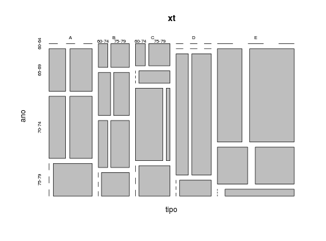
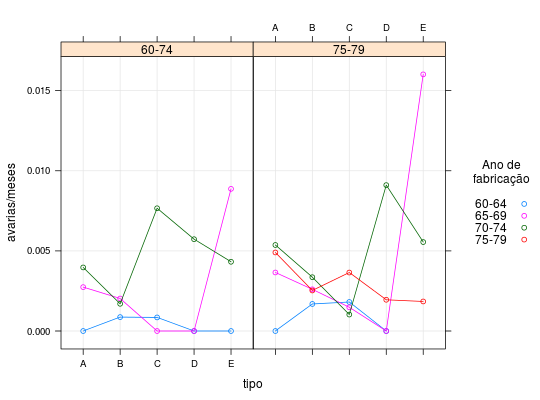

Dados referentes a um estudo em que se avaliou o número de avarias causadas por ondas em navios de carga. Contém 34 registros com informações do tipo de navio, ano de fabricação, período de operação e tempo em operação (que pode ser considerado como offset na análise, pois espera-se um maior número de avarias em navios com um maior tempo em operação).
Um data.frame com 34 observações e 5 variáveis.
tipoano60-64), entre 1965
e 1969 (65-69), entre 1970 e 1974 (70-74) e entre
1975 e 1979 (75-79)).peri60-74) e entre 1975
e 1979 (75-79)).mesesavariasPAULA (2004), Tabela 4.9 pág. 322.
data(PaulaTb4.9)#> Warning: data set ‘PaulaTb4.9’ not foundstr(PaulaTb4.9)#> 'data.frame': 34 obs. of 5 variables: #> $ tipo : Factor w/ 5 levels "A","B","C","D",..: 1 1 1 1 1 1 1 2 2 2 ... #> $ ano : Factor w/ 4 levels "60-64","65-69",..: 1 1 2 2 3 3 4 1 1 2 ... #> $ peri : Factor w/ 2 levels "60-74","75-79": 1 2 1 2 1 2 2 1 2 1 ... #> $ meses : int 127 63 1095 1095 1512 3353 2244 44882 17176 28609 ... #> $ avarias: int 0 0 3 4 6 18 11 39 29 58 ...# Número de observações em cada combinação das variáveis explicativas ftable(PaulaTb4.9[, c("tipo", "ano", "peri")])#> peri 60-74 75-79 #> tipo ano #> A 60-64 1 1 #> 65-69 1 1 #> 70-74 1 1 #> 75-79 0 1 #> B 60-64 1 1 #> 65-69 1 1 #> 70-74 1 1 #> 75-79 0 1 #> C 60-64 1 1 #> 65-69 1 1 #> 70-74 1 1 #> 75-79 0 1 #> D 60-64 1 1 #> 65-69 1 1 #> 70-74 1 1 #> 75-79 0 1 #> E 60-64 1 0 #> 65-69 1 1 #> 70-74 1 1 #> 75-79 0 1# Número de avarias e número de avarias por mês observada em cada # combinação das variáveis explicativas xtabs(avarias ~ tipo + ano + peri, data = PaulaTb4.9)#> , , peri = 60-74 #> #> ano #> tipo 60-64 65-69 70-74 75-79 #> A 0 3 6 0 #> B 39 58 12 0 #> C 1 0 6 0 #> D 0 0 2 0 #> E 0 7 5 0 #> #> , , peri = 75-79 #> #> ano #> tipo 60-64 65-69 70-74 75-79 #> A 0 4 18 11 #> B 29 53 44 18 #> C 1 1 2 1 #> D 0 0 11 4 #> E 0 7 12 1 #>xt <- xtabs(avarias/meses ~ ., data = PaulaTb4.9) plot(xt)library(lattice) xyplot(avarias/meses ~ tipo | peri, groups = ano, data = PaulaTb4.9, type = c("p", "a", "g"), auto.key = list( space = "right", cex.title = 1, title = "Ano de\nfabricação"))